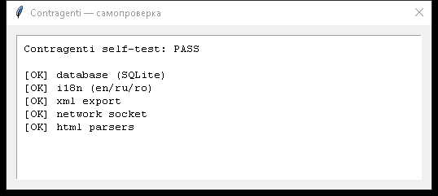
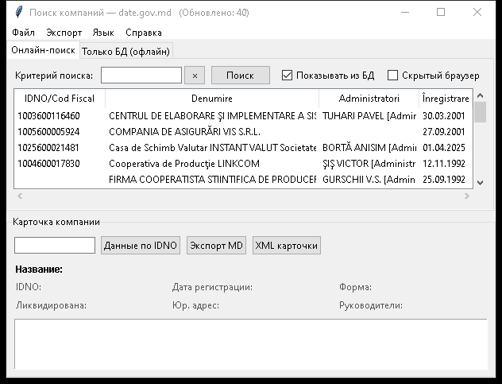
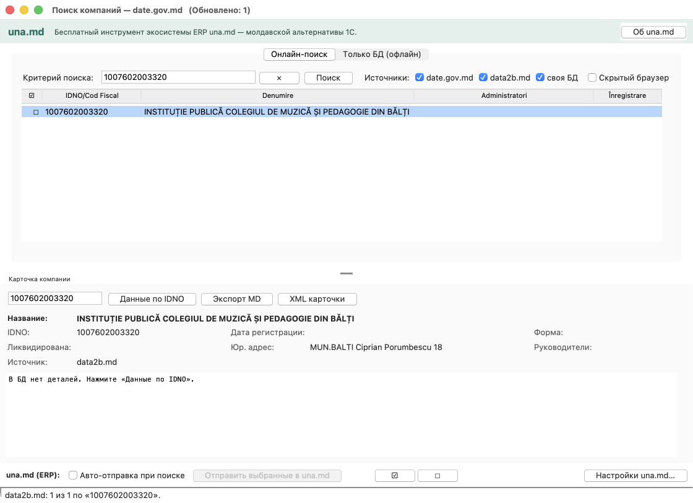
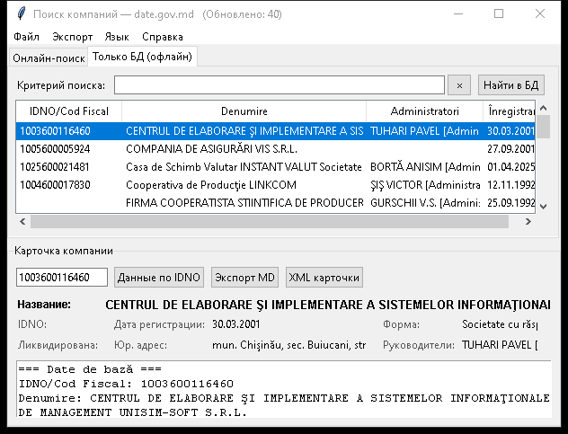
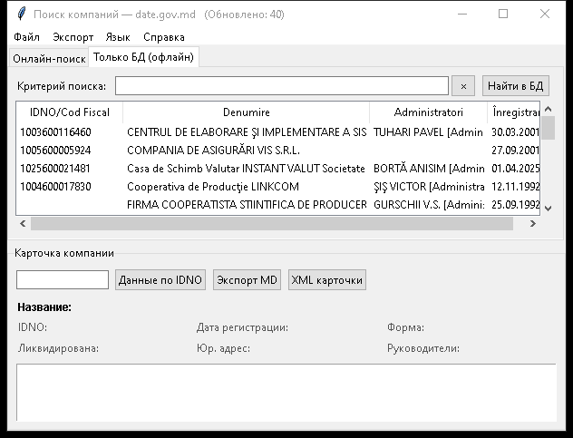
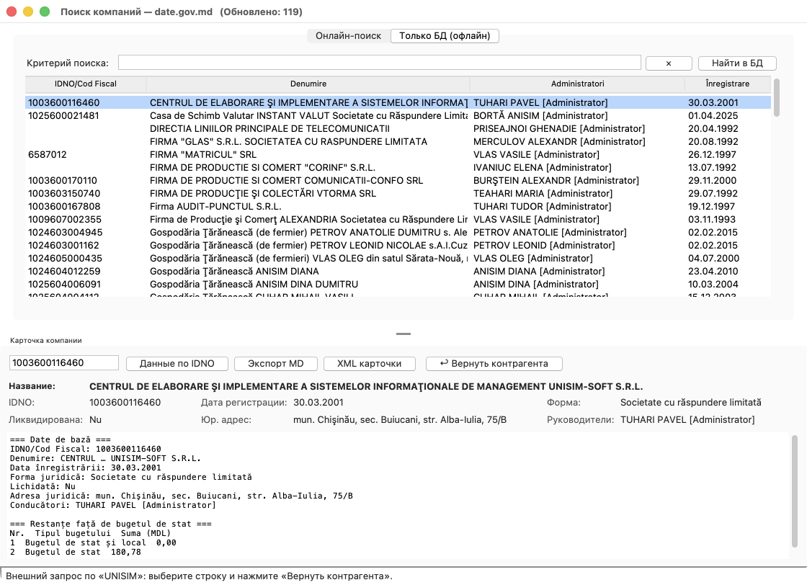
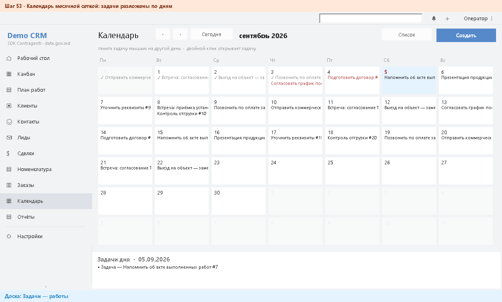
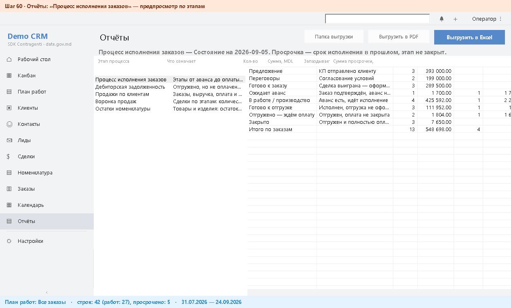
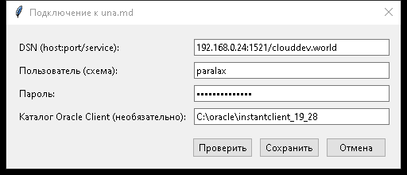
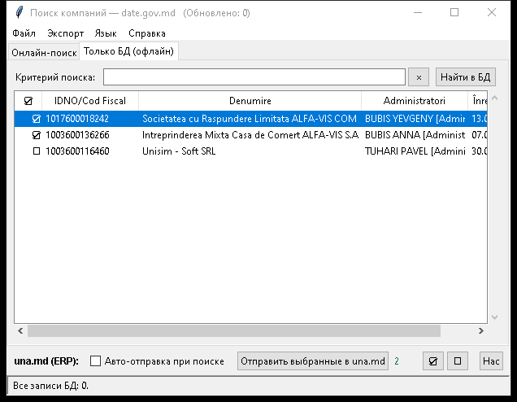

Учебно-методическое пособие · версия решения 1.3.7
Contragenti и Demo CRM: методичка
Девятнадцать занятий от установки на чистую машину до приёмочных проверок. Каждое занятие — цель, шаги, снимок экрана и способ убедиться, что получилось именно то, что должно.
Установка и настройка
Выполняет ИТ-администратор. Занятия 1–4, ориентировочно полдня на первое рабочее место и 15 минут на каждое следующее.
01Что и куда ставится
Цель: понимать, из чего состоит решение и где окажутся данные, прежде чем что-либо запускать.
Устанавливаются три программы. Они лежат рядом и работают вместе, но независимы: каждую можно запустить отдельно.
| Программа | Что делает | Кто пользуется |
|---|---|---|
| Contragenti | Ищет организацию в государственном реестре, хранит найденное в своей базе, отдаёт карточку другим программам | Оператор |
| Demo CRM | Пример учётной системы: клиенты, сделки, заказы, проекты, задачи. Показывает, как встроить поиск в свою программу | Оператор |
| Мастер настройки | Проверяет компьютер, обновляет компоненты, разворачивает стартовую базу, делает самопроверку | Администратор |
Данные никогда не лежат в папке с программой, если та находится в
Program Files. Это правило действует и для администратора —
иначе у разных пользователей получились бы разные базы.
| Что | Windows | macOS |
|---|---|---|
| База организаций, настройки | %LOCALAPPDATA%\Contragenti\ | ~/Library/Application Support/Contragenti/ |
| База CRM, отчёты | …\Contragenti\DemoCRM\ | …/Contragenti/DemoCRM/ |
| Журналы | …\Contragenti\logs\ | ~/Library/Logs/Contragenti/ |
Переустановка программы данные не затрагивает. Чтобы перенести рабочее место на другой компьютер, достаточно скопировать каталог данных.
02Установка на Windows
Цель: установить решение и понять, какой из двух установщиков выбрать.
- Скачайте
Contragenti-1.3.7-setup.exeиз каталогаrelease/репозитория. Файл небольшой, около 12 МБ: программу он скачивает во время установки, поэтому нужен интернет. - Запустите. Браузер может предупредить, что файл «редко скачивают» — это значит,
что он не подписан сертификатом издателя, а не то, что он опасен. Подлинность
проверяется сравнением контрольной суммы с манифестом
release.json. - Подтвердите запрос прав администратора, чтобы установить в
C:\Program Files\Contragentiдля всех пользователей. Если прав нет — откажитесь: установка продолжится в профиль текущего пользователя. - Дождитесь окончания. Автоматически откроется мастер настройки — это занятие 4.
Для централизованной раздачи — тихая установка:
Contragenti-1.3.7-setup.exe /S /D=C:\Program Files\Contragenti --lang ro
Дополнительно: --no-shortcuts — без ярлыков,
--no-wizard — не открывать мастер,
--extract-only <каталог> — портативная распаковка без
записей в реестр.
«The system administrator has set policies to prevent this installation» —
это код 1625, запрет политики на пакеты Windows Installer. Установщик
setup.exe с Windows Installer не связан и этим запретом не
блокируется; ошибку выдаёт именно MSI-вариант.
Интернета на машине нет. Тогда наоборот — нужен MSI: он содержит всё
внутри и ничего не докачивает. Запускать из окна с правами администратора:
msiexec /i Contragenti-1.3.7-win64.msi /qn
03Установка на macOS
Цель: установить решение на Mac и пройти предупреждение Gatekeeper.
- Выполните в терминале одну строку:
curl -fsSL https://raw.githubusercontent.com/PavelTuhari/Contragenti/main/release/contragenti-macos-install.sh | bash
Либо установите пакетContragenti-1.3.7-macos.pkgиз каталогаrelease/. - При первом запуске приложения macOS сообщит, что разработчик не проверен. Закройте окно, щёлкните по приложению правой кнопкой и выберите Открыть — этот способ разрешает запуск навсегда.
- Установятся три приложения: Contragenti.app со встроенным Python, нативная Demo CRM.app и Contragenti Setup.app. Отдельно ставить Python не нужно.
Подпись Apple Developer ID платная и требует накопленной репутации, как и code-signing на Windows. Отсутствие подписи — вопрос стоимости, а не безопасности; контрольные суммы всех файлов опубликованы в манифесте.
04Мастер настройки
Цель: довести рабочее место до состояния «готово» и получить документальное подтверждение этого.
Мастер открывается сам после установки; позже его можно вызвать из меню «Пуск» — Contragenti — настройка и обновление. Он последовательно проходит одиннадцать шагов: составляет технический паспорт компьютера, проверяет Chrome и Python, обращается к репозиторию за обновлениями, разворачивает стартовую базу организаций, настраивает CRM и язык, заполняет демонстрационные данные, проверяет ярлыки и запускает самопроверку обеих программ.
- Выберите язык вверху окна: Română, English или Русский. Выбор запоминается и передаётся в Demo CRM.
- Оставьте отмеченными все шаги и нажмите Выполнить.
- Дождитесь зелёного Готово. Каждый шаг отмечается как выполненный, пропущенный или ошибочный.
- При ошибке нажмите Открыть отчёт: мастер собирает технический паспорт, журнал и события установки в один файл, который можно приложить к обращению.
Для проверки без окна — например, из скрипта раздачи ПО:
rem код возврата 0 и строка «ошибок 0, замечаний 0» = место принято
"%ProgramFiles%\Contragenti\ContragentiSetup.exe" --check --offline --no-seed --no-python

Мастер завершился с итогом «ошибок 0, замечаний 0». На рабочем столе появились ярлыки Contragenti и Demo CRM, а в базе организаций — около 219 стартовых записей.
Не найден Google Chrome. Без него портал недоступен. Мастер выводит кнопку со ссылкой на установку; после установки Chrome шаг перезапускается.
В журнале CERTIFICATE_VERIFY_FAILED. Хранилище
сертификатов Windows устарело. Мастер сам повторяет запрос с набором корневых
сертификатов из поставки; проверка сертификата при этом не отключается. Если
повторяется — обновите систему.
Для оператора. Занятия 5–9, около часа с практикой.
05Первый поиск
Цель: найти организацию по названию и понять, что происходит на экране во время поиска.
- Откройте Contragenti. Открывается вкладка Онлайн-поиск.
- Введите в поле часть названия, фамилию руководителя или IDNO — все три варианта работают.
- Нажмите Поиск. Откроется настоящее окно Chrome — так и должно быть: форма реестра защищена невидимой проверкой, которая срабатывает только для настоящего браузера.
- Если Google показал картинку с проверкой — решите её в окне Chrome. Программа ждёт; обходить проверку она не умеет и не должна.
- Результаты появятся в таблице. Они сразу сохраняются в локальную базу, повторный поиск той же организации уже не потребует портала.

Поиск «висит». Загляните в окно Chrome: скорее всего, там ждёт проверка. Не включайте «скрытый браузер» — проверку станет невозможно пройти.
Ничего не найдено, хотя организация существует. Портал отдаёт не все действующие организации. Включите второй источник — занятие 6.
06Источники и когда их переключать
Цель: осознанно управлять тем, куда программа обращается за данными.
Источников три, каждый включается отдельно, выбор запоминается между запусками.
| Источник | Что даёт | Скорость | Когда выключать |
|---|---|---|---|
| date.gov.md | Полная карточка: форма, адрес, руководители, учредители, задолженность | 10–30 секунд | Когда нужна только быстрая проверка существования организации |
| data2b.md | Название, IDNO, адрес | Доли секунды | Практически никогда: он бесплатный, быстрый и без проверок |
| Своя база | Всё, что накоплено ранее | Мгновенно | Когда нужно видеть только свежий ответ портала |

Выключите date.gov.md и повторите поиск: ответ придёт почти мгновенно и без окна Chrome. Включите обратно — вернётся полная карточка.
Если оба онлайн-источника выключены, поиск идёт только по локальной базе. Это удобный режим для работы без интернета и для быстрого просмотра уже найденного.
07Карточка организации
Цель: прочитать карточку и понимать, откуда взялось каждое поле.
- Выберите организацию в таблице результатов.
- Нажмите Подробнее — программа откроет страницу карточки на портале и заберёт полные сведения.
- Ниже появятся блоки: базовые данные, учредители с долями и задолженность перед бюджетом.
- Кнопка Экспорт в Markdown сохраняет карточку отдельным файлом — в том числе для передачи в ИИ-помощник, формат для этого и задуман.

Поле приходит с портала в виде Da или
Nu. Значение Da — организация
ликвидирована; это повод остановить сделку, а не техническая ошибка.
08Работа без интернета
Цель: пользоваться накопленной базой, когда портал недоступен или не нужен.
- Перейдите на вкладку Только БД.
- Введите любую часть названия или IDNO и нажмите Найти. Поиск идёт по локальному файлу и не обращается к сети.
- Через меню Экспорт базу можно выгрузить целиком в CSV или Excel, а выбранные строки — в отдельные файлы Markdown.

09Возврат карточки в свою систему
Цель: понять, как чужая программа получает карточку и что видит оператор в этот момент.
Сценарий такой: в учётной системе не нашли контрагента, она запускает Contragenti с готовым фильтром, оператор выбирает нужную организацию — и карточка возвращается обратно в формате XML.
- Учётная система запускает программу с ключами
--pick --out card.xmlи передаёт фильтр. - Окно открывается с уже выполненным поиском, вверху видна строка задания.
- Оператор выбирает организацию и нажимает Вернуть контрагента.
- Программа записывает карточку в файл и закрывается. Вызвавшая система раскладывает поля по своим колонкам.

Карточка получена — файл создан, поля разложены. Организация уже есть — сверка идёт по IDNO, дубль не заводится. Оператор закрыл окно — файла нет, и это не ошибка, а отказ от выбора.
Для оператора. Занятия 10–16. Demo CRM — рабочий пример учётной системы: на ней удобно учиться и по ней же строится интеграция со своей программой.
10Вход, роли, первый экран
Цель: войти в программу и понимать, что можно делать с вашей ролью.
- Запустите Demo CRM. Панель входа появляется прямо в окне — отдельного диалога нет.
- Введите логин и пароль. Первый вход в новую базу — admin / admin; смените пароль сразу в разделе Настройки.
- Выберите язык — он запоминается и общий с Contragenti.

Роль определяет, что доступно на запись. Заводить сотрудников может только администратор; остальные видят список, но кнопки записи у них погашены.
| Роль | Типичные задачи |
|---|---|
| Администратор | Сотрудники, доступ, настройки, пароли |
| Руководитель | Рабочий стол, отчёты, проекты целиком |
| Коммерческий | Клиенты, лиды, сделки, заказы |
| Производство, Склад | Заказы, номенклатура, план работ |
| Бухгалтерия | Оплаты, дебиторская задолженность, отчёты |
| Наблюдатель | Только просмотр |

Модальное окно останавливает работу и делает невозможной проверку без человека. Поэтому результат действия показывается строкой внизу, а удаление подтверждается повторным нажатием той же кнопки.
11Клиент из реестра и дубли
Цель: завести клиента, не набирая реквизиты руками, и увидеть, как работает защита от дублей.
- Откройте раздел Клиенты.
- Наберите в поле поиска название организации — оно уйдёт в Contragenti как стартовый фильтр.
- Нажмите Создать из реестра. Откроется Contragenti с готовым поиском.
- Выберите организацию и нажмите Вернуть контрагента.
- Клиент появится в списке с заполненными реквизитами. Дополните то, чего нет в реестре: тип, телефон, e-mail, контактное лицо, — и нажмите Сохранить.

Теперь повторите шаги 3–4 с той же самой организацией.

Первый импорт добавил клиента, второй сообщил о дубликате, и число клиентов в заголовке окна не изменилось.
12Лид, сделка, клиент
Цель: пройти путь от первого интереса до клиента в справочнике.
- В разделе Лиды нажмите Создать и заполните имя, компанию, телефон, источник обращения.
- По мере работы меняйте статус: Новый → В работе.
- Когда интерес подтвердился, нажмите В клиенты. Программа создаст клиента, свяжет его с лидом и поставит статус Конвертирован.
- В разделе Сделки заведите сделку на этого клиента, укажите сумму и предполагаемую дату закрытия.

13Заказ и его проведение
Цель: собрать заказ из позиций и понять, что делает Провести.
- Откройте Заказы и нажмите Создать. Укажите номер, клиента, вид заказа и дату.
- В нижней панели нажмите + Строка, выберите позицию из номенклатуры, укажите количество и цену. Сумма считается автоматически.
- Доведите статус до Выполнен или Оплачен.
- Нажмите Провести.

Проведение меняет остатки, и у разных видов заказа по-разному:
| Вид заказа | Что происходит с остатком |
|---|---|
| Продажа | Уменьшается на количество в строках |
| Производство | Увеличивается: изделие изготовлено |
| Услуга | Не меняется |

Провести можно только заказ в статусе Выполнен или Оплачен и только один раз. Строка внизу назовёт причину отказа.
14Рабочий стол и канбан
Цель: видеть состояние дел целиком и менять стадии перетаскиванием.
Рабочий стол — восемь плиток по стадиям процесса, от предложения до закрытия. В каждой видно количество, сумму и сколько позиций просрочено. Щелчок по плитке открывает соответствующий раздел с уже наложенным фильтром.

Канбан содержит пять досок: заказы, сделки, задачи, проекты и задачи проектов. Карточку можно перетащить мышью или перевести кнопками ← и →; двойной щелчок открывает запись.

15Процесс, план работ, календарь
Цель: пользоваться тремя способами смотреть на одни и те же данные.
Бизнес-процесс — схема с дорожками: кто за что отвечает и в каком порядке. Щелчок по узлу показывает его карточки и описание, двойной — открывает раздел с фильтром. Описание узла можно править прямо здесь, оно сохраняется в общий файл процессов.

План работ — диаграмма Ганта: план и факт, красным просроченное, зелёным закрытое, вертикальная линия «сегодня». Полосу можно двигать мышью и растягивать за край. В режиме проектов видны стрелки зависимостей между задачами.

Календарь — сетка месяца. Задачу можно перетащить на другой день, и срок изменится.

16Проекты и отчёты
Цель: вести проект с тендером и авансом и выгружать отчёты.
Проект отличается от заказа тем, что живёт долго и состоит из этапов. В карточке есть номер тендера, срок подачи, бюджет, процент аванса и полученные оплаты. Кнопки Задачи проекта и План (Гант) открывают его этапы.

В разделе Отчёты доступны шесть отчётов: исполнение заказов, дебиторская задолженность, продажи по клиентам, воронка продаж, остатки номенклатуры и проекты. Дополнительно выбирается сотрудник — «все» или конкретный человек.
- Выберите отчёт в списке — таблица появится тут же, в окне.
- Нажмите Excel или PDF.
- Кнопка открытия папки покажет файл: он сохраняется в каталог отчётов с датой в имени.

Выполняет ИТ-администратор вместе с администратором базы данных. Занятия 17–18, только для вариантов развёртывания B–D.
17Подключение к справочнику ERP
Цель: отправлять найденные организации прямо в справочник ERP una.md, без промежуточных выгрузок.
- Установите 64-битный Oracle Instant Client. Для сервера версии 11.2 это обязательно: «тонкий» режим драйвера такую версию не поддерживает.
- Откройте настройки подключения в Contragenti и заполните строку подключения, техническую учётную запись и путь к Instant Client.
- Пароль задавайте переменной окружения
(
TMS_PASSWORD), а не в файле настроек: окружение имеет приоритет, а файл может попасть в резервную копию или систему контроля версий. - Нажмите проверку связи. Затем отметьте организации в списке и отправьте их.


Каждая организация ложится в справочник тремя связанными блоками: справочная запись, реквизиты и банковские счета. Каждый блок идёт своей транзакцией, поэтому сбой на счетах не отменяет уже заведённую организацию.
Тестовая организация появилась в справочнике всеми тремя блоками, связанными общим идентификатором. Повторная отправка той же организации второй записи не создала — сверка идёт по фискальному коду и подкреплена ограничением в самой базе.
Ошибка инициализации драйвера. Проверьте разрядность Instant Client: нужна 64-битная сборка, и путь к ней должен быть указан явно.
Организация пропущена. Записи без идентификационного кода в справочник не передаются: их не с чем сверять, и при каждой отправке они бы задваивались.
18Общий справочник через хаб
Цель: собрать базы с нескольких рабочих мест в один справочник.
Рабочие места отправляют свои базы на хаб, он ставит пакет в очередь и вливает его в справочник асинхронно. Приём и импорт разделены намеренно: пакет переживает перезапуск и недоступность базы данных.
- Выпустите ключ каждому рабочему месту — по ключу видно, кто прислал пакет, и
отзыв одного не затрагивает остальные:
python tools/hub_keygen.py "Бухгалтерия" --save python tools/hub_keygen.py --list - Запустите хаб контейнером либо службой systemd (обе процедуры описаны в
deploy/README_ru.md). - Выставьте его наружу только через reverse-proxy с TLS: пакет — это база организаций, по открытому HTTP она ходить не должна.
- На рабочих местах пропишите адрес хаба и ключ. Отправка пойдёт в фоне.
Обращение к хабу без ключа должно возвращать отказ, с ключом — приниматься. Если хаб слушает внешний адрес, а ключи не заданы, приём закрыт намеренно: иначе в общий справочник смог бы писать любой, кто знает адрес.
Для приёмочной комиссии. Занятие 19 и материалы для самопроверки.
19Проверки с кодами возврата
Цель: принимать работу по измеримому результату, а не по словам исполнителя.
Каждая программа умеет проверить себя сама и закончить работу кодом возврата. Это и есть материал приёмки: в протокол вносится фактическое значение.
| Команда | Что проверяет | Ожидается |
|---|---|---|
| Contragenti.exe --selftest | База, три языка, экспорт, сеть, разборщики страниц, настройки источников | 8 из 8, код 0 |
| ContragentiCRM.exe --selftest | Разбор карточки, добавление и отсечение дубля | Успех, код 0 |
| ContragentiCRM.exe --dml-test | Операции со всеми таблицами во временной базе | 110 проверок, код 0 |
| ContragentiCRM.exe --gui-test | Сценарий интерфейса со снимками экрана | 80 из 80, отчёт создан |
| ContragentiSetup.exe --check --offline | Все шаги мастера без окна | «ошибок 0, замечаний 0» |
Проверка интерфейса из 80 шагов включает вход с неверным паролем, переключение языка, импорт и повторный импорт, перетаскивание на канбане и диаграмме Ганта, проведение заказа, выгрузку всех отчётов — и настоящий вызов Contragenti. Отчёт со снимками каждого шага сохраняется одним файлом.
Проверка интерфейса требует экрана и не работает на сервере без рабочего стола. Это цена настоящих перетаскиваний вместо их имитации: планируйте прогон на обычном рабочем месте.
Чек-лист: рабочее место готово
- Программы установлены, ярлыки на рабочем столе присутствуют
- Мастер настройки завершился с итогом «ошибок 0, замечаний 0»
- Google Chrome установлен, пробный поиск на портале выполнен
- В базе организаций есть стартовые записи
- Вход в Demo CRM выполняется, пароль администратора изменён
- Клиент из реестра заведён, повторный импорт отбит как дубликат
- Заказ создан, проведён, остаток номенклатуры изменился
- Отчёт выгружен в Excel и открывается
- Язык интерфейса соответствует согласованному
- Каталог данных включён в резервное копирование рабочих станций
Контрольные вопросы
- Почему при поиске открывается окно браузера и можно ли это отключить? Форма реестра защищена невидимой проверкой, которая срабатывает только для настоящего браузера. Отключать нельзя: скрытый режим не даст пройти проверку, когда она появится.
- Где окажется база организаций, если программа установлена в Program Files? В профиле пользователя, в каталоге данных приложения. Так у администратора и обычного пользователя не будет разных баз.
- По какому полю отсекаются дубли и почему не по названию? По IDNO. Названия в реестре встречаются в разном написании, регистре и с разной диакритикой.
- Учётная система запустила поиск, но оператор закрыл окно. Это ошибка? Нет. Файл карточки не создаётся, и это штатный отказ от выбора, который вызывающая программа должна обработать отдельно.
- Что делает кнопка «Провести» у заказа на производство? Увеличивает остаток номенклатуры: изделие изготовлено. У продажи остаток уменьшается, у услуги не меняется.
- Почему в CRM нет всплывающих окон с сообщениями? Модальное окно останавливает работу и делает невозможной проверку без человека. Результат показывается строкой внизу, удаление подтверждается повторным нажатием.
- Установщик MSI выдал ошибку 1625. Что это и что делать? Запрет политики домена на пакеты Windows Installer. Нужно использовать setup.exe — он с Windows Installer не связан.
- Сервер Oracle версии 11.2. Что обязательно подготовить заранее? 64-битный Oracle Instant Client: «тонкий» режим драйвера эту версию не поддерживает.
Словарь
- IDNO
- Идентификационный номер организации в Молдове, 13 цифр. Главный ключ сверки: по нему отсекаются дубли и связываются записи между системами.
- Карточка
- Набор сведений об организации из реестра: название, юридическая форма, адрес, руководители, учредители, задолженность. Передаётся между программами в формате XML.
- Дедупликация
- Отсечение повторов. Работает на двух уровнях: проверкой перед записью и ограничением в самой базе.
- Мастер настройки
- Программа, которая доводит рабочее место до готовности: проверяет компьютер, обновляет компоненты, разворачивает стартовую базу и делает самопроверку.
- Самопроверка
- Встроенный режим, который заканчивается кодом возврата. Основной материал приёмки.
- Хаб
- Служба, собирающая базы с рабочих мест в один справочник. Приём и импорт разделены, поэтому пакет не теряется при перезапуске.
- Проведение
- Действие над заказом, изменяющее остатки номенклатуры. Выполняется один раз и только в статусе «Выполнен» или «Оплачен».
- Стартовая база
- Около 219 организаций, поставляемых вместе с программой, чтобы работа была возможна с первого запуска и без интернета.